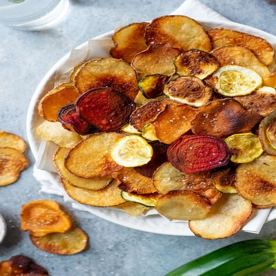

Read, Learn, Share
get daily how-tos, stories & updates with the latest news

Sign up for our newsletter to recieve a handpicked selection of the best stories, recipes, and news, delivered weekly to your inbox
2012's Best Summber Cookbooks
With the best of the season coming form "orchards, farms and gardens," NPR has put together an impressive collection of 10 summer cookbooks.

How to Make Vegetable Chips
About a month ago, I ate almost an entire box of kale chips, My cousin in Brooklyn, and before a very thoughtfully prepared vegan..
Join us on Pintereset!
If I could curate a cookbook for you, this would be it.

Recipes fromo a Sunday Supper
I could not figure out what to do with the delctable slices of Pear Cake tha tI brought home from this wonderful Sunday supper - eat them slowly, a little bit at...